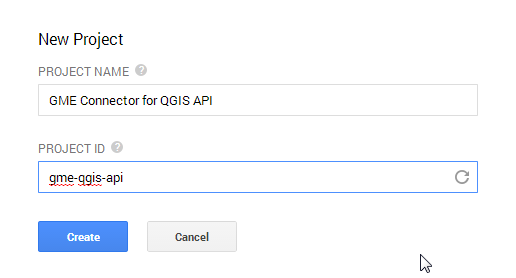

Using the QGIS Browser
[ Download PDF A4 Letter ]
QGIS comes with a standalone application called QGIS Browser. This is a
useful companion tool to QGIS and helpful in managing GIS datasets. ArcGIS users
may think of it as an application similar to ArcCatalog.
Locating the QGIS Browser
QGIS Browser Standalone Application
QGIS Browser is part of the standard install of QGIS.
- Windows: If you installed QGIS via OSGEO4W installer, you will see
QGIS Browser in your start menu.
- Mac: The application is located at
QGIS.app/Contents/MacOS/bin/QGIS Browser.app. You can create a symlink to this
app. Navigate to the Application folder, right-click the QGIS icon and select
Show Package Contents. Browse to . Right-click the QGIS Browser icon and select
Make Alias. Drag the QGIS Browser alias to the
Applications folder. Now you can access the QGIS Browser like
any other application.
- Linux: You can launch the QGIS browser by the command qbrowser. It is
located in the same directory as the qgis application.

Browser Panel in QGIS
A convenient way to access the QGIS Browser is from within the main QGIS Desktop
application itself. The browser panel is located at the bottom of the left-hand
panel in QGIS. Click on the Browser tab to open the QGIS
Browser. If you do not see the Browser tab, enable it by doing to
(Windows and Mac) or
(Linux).

Procedure
- Now let us explore some features of the QGIS Browser. Switch to the
standalone QGIS Browser application. Browse to a directory on your system
where you have some GIS data. You will immediately notice the advantage of
using the Browser. Instead of seeing all support files and non-spatial data,
you see only the spatial layers that are supported by QGIS. Click on a layer
to select it.

- As you select a layer, you will see the Metadata in the first tab on the
right-hand panel. You can quickly gather basic information about the dataset
from this panel, such as number of features, projection etc.

- If you switch to the Preview tab, you will a preview of the dataset. This is
a quick way to determine how the dataset looks before opening it in QGIS.

- The last tab is the Attributes tab. Here you can see the attribute table of
the dataset to get an idea of the fields available and their values.

- The QGIS Browser not only gives you access to vector and imagery layers on
your system, but also databases and network resources. If you use any online
data via WMS, you can quickly preview it within the browser. Just expand the
WMS location and you will see the resources you have setup. Similarly, if
you have PostGIS, SpatialLite or MSSQL databases available, you can access
those as well.

- QGIS Browser has the ability to browse and open zip files directly. Navigate
to any folder containing zip files. You will see that the zip files also
appear as a supported dataset and you can preview it just like any other
dataset.

- Another useful feature is to add certain folders in your system as
Favorites. Right-click any folder and select Add as a favorite.
Nota
Adding a folder to your favorites list currently works only from the Browser
panel in QGIS. This feature is not available in the standalone application.

- After adding the location as a favorite, it can be quickly accessed from the
Favorites folder in the browser.

- Once you have selected the layer, you can double-click it to add it to the
QGIS canvas. You can also drag-and-drop the layer to the QGIS Canvas.

- You can switch back to the Layers panel from the bottom of the
left-hand panel in QGIS to view the added layer.